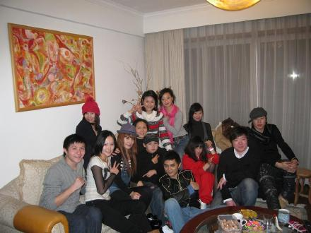
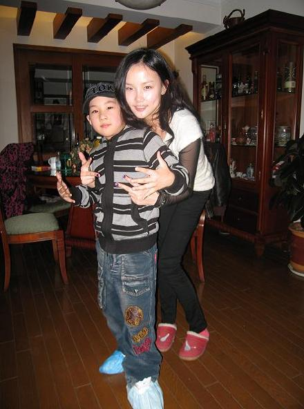
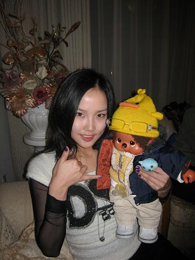
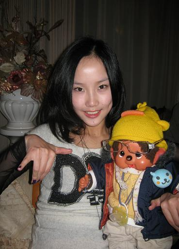
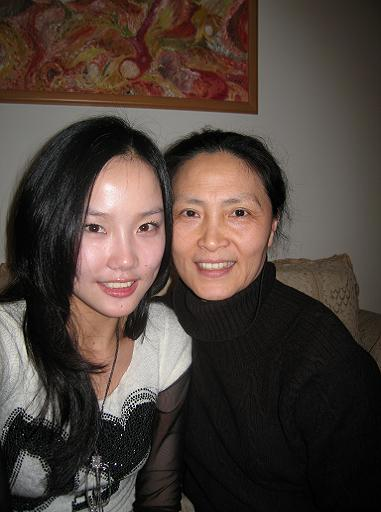
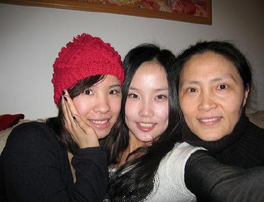

每一年的大年初四大家都会聚集在周老师家里,周老师最厉害的就是每年的晚餐都是一模一样,自助晚餐,每年完全一样.三文鱼片,土豆色拉,PIZZA,酒酿圆子...我们都很爱吃.
每一年都会认识一些新朋友,始终不变的有我,郭凌霞,朱力业,胡彦斌...图片有点小大家自己找找应该就能对上,呵呵
这次又多了一个小朋友,就是现在非常火的宝宝,也是我们周老师的学生,其实去年就见过他一次,直到这次09年的春晚看到宝宝和杰伦一起表演,真为他高兴,也很荣幸自己有了这样一个了不起的小师弟.
周老师说我脸有了变化,她怀疑我是不是哪里弄过了,胡彦斌还一边瞎起哄说我去了韩国,真的又无辜又高兴啊,说明大家有觉得我变漂亮吧,我想主要是发型的关系吧...

和宝宝一起YO YO YO,跟他学跳抽筋舞,

他的名字叫王小新,我们认识很久了,王小新穿上新衣服也来给周老师拜年


我亲爱的周老师,总是那么的可爱,像妈妈一样对每一个学生都非常好.

最好的朋友凌凌,龄龄和周老师

今天没有放烟花接财神,从周老师家聚会完已经是晚上11点30,又下着毛毛雨,我努力找了很多地方都没有找到烟花买,赶回家也来不及,所以今年没能够放烟花接财神,不过我相信财神一直都才身边的,关键是你接不接的住,是不是有缘接到,哈哈